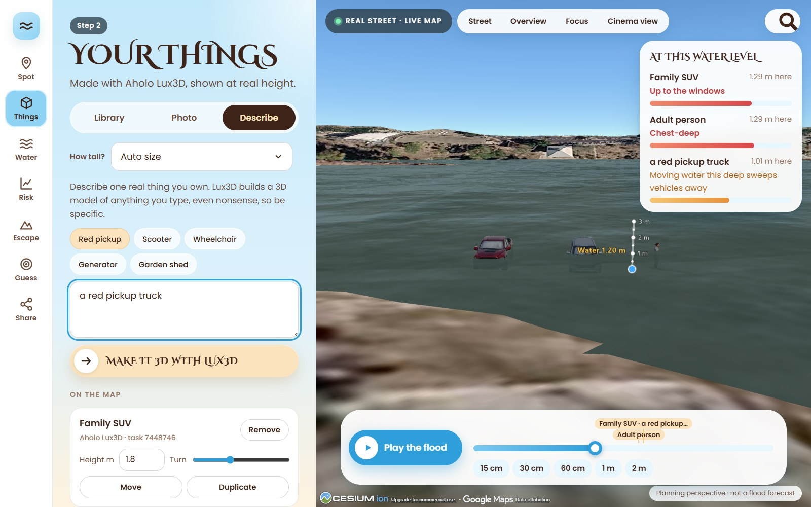
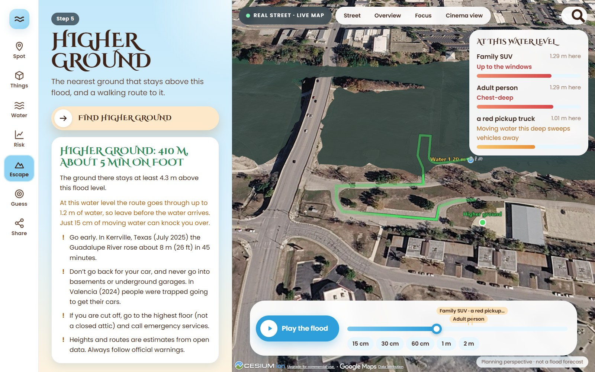

WATERLINE3 · How it works
Snap it. Place it.
Raise the water.
 01 · Lux3D
01 · Lux3DSnap it or describe it
Upload a photo of your car, scooter or door, or type “a red pickup truck”. Aholo Lux3D builds a textured 3D model in about two minutes, live inside the app.

02 · True scalePut it on your street
Type your street, town or postcode, anywhere in the world, or press Use my location. Waterline finds street level in Google’s photorealistic 3D city, and the model stands at its real height on the real ground.

03 · ImpactRaise the water
Play the flood and watch it reach the wheels, the windows, your waist. Then check modelled river-flood depths for that spot and find the walking route to higher ground.
Works in two modes: Real street (live 3D city and data) and Studio (an original illustrative street that needs no map account, for instant demos).